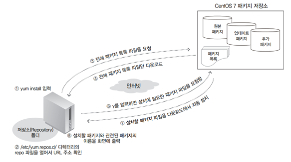

Centos7 패키지 설치 명령어
1. yum 개요
centos에서 필요한 package를 설치하는 편리한 도구
특정 package를 설치하고자 할 때 의존성 있는 다른 패키지를 먼저 자동으로 설치해주는 기능
저장소 URL "/etc/yum.repos.d/”
* yum install 패키지이름’ 명령이 작동하는 방식

2. yum 기본적인 사용법
2-1. 기본 설치 : yum install 패키지이름
- 주로 “yum -y install 패키지이름”으로 사용
- “-y”는 사용자의 확인을 모두 “yes”로 간주하고 설치를 진행한다는 옵션
2-2. 업데이트 가능한 목록 보기 : yum check-update
2-3. 업데이트 : yum update 패키지이름
2-4. 삭제 : yum remove 패키지이름
2-5. 정보 확인 : yum info 패키지이름